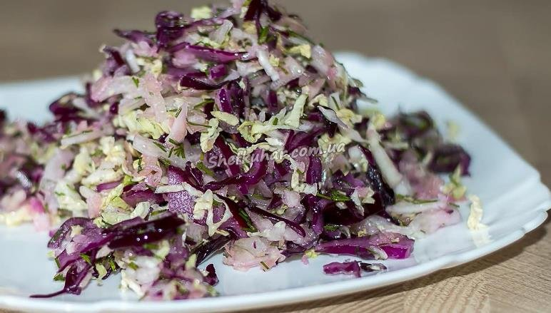

Здорове харчування
Страви
Вітамінний салат "Три капусти"
Червонокачанну капусту потрібно нарізати соломкою, як можна тонше. Перекладаю у тарілку, потрібно трішки підсолити і добре пом’яти. Розминайте до тих пір, поки вона не стане соковитою і м'якою.Вилийте сюди ж соняшникову олію.Тепер потрібно дрібно порубати квашену капусту. Відправляю її туди ж в салатницю.Тонкими четвертинками нарізати цибулю.Якщо у вас є яка-небудь свіжа зелень, то її теж потрібно подрібнити.Залишилося все акуратно перемішати.Смачного!
Запечені фаршировані помідори
Для цього візміть 6 помідорів та зріжте у них верхівки, чайною ложкою видаліть нутрощі. Для начинки беремо 1 стакан відвареного рису, 3/4 моцарелли, соус песто і шпинат. Додайте сіль, перець та приправи на вибір, гарно перемішайте та нафаршируйте помідори. Духовку розігрійте до 200 градусів, зверху посипте помідори моцареллою та полийте оливковою олією. Запікайте до 20 хвилин до м*якості томатів. Смачного!
Рулетики з кабачків з курячим філе
Починається процес з підготовки до використання курячого філе – його потрібно гарненько вимити, промокнути рушником і порізати на тонкі довгі смужки (для цього краще всього скористатися ножем з довгим лезом).Куряче м'ясо замаринувати в суміші соєвого соусу і прованських трав – просто змішати все разом. Тепер кабачки. Їх теж потрібно нарізати на довгі кусочки товщиною десь в пів сантиметра. Потім включаємо духовку на максимум і кладемо туди смужки кабачків, викладені на деко, злегка присипані сіллю і збризнуті оливковою олією. Хвилин на 10. Це для того, щоб вони стали м'якше і легше згорталися в рулетик. За цей час ми пустимо на терку сир і підготуємо базилік, промивши його, висушивши і розділивши на листочки. Коли пласти кабачків трохи охолонуть, ми на них по всій довжині викладаємо куряче філе і посипаємо тертим сиром. Даємо на кожен кабачок листочки базиліку та краплю томатного соусу. Залишилося згорнути рулетиком і протягнути шпажкою, по 2-3 штучки на кожну.Викладаємо на деко і запікаємо близько 20 хвилин при 180 градусах. Смачного!